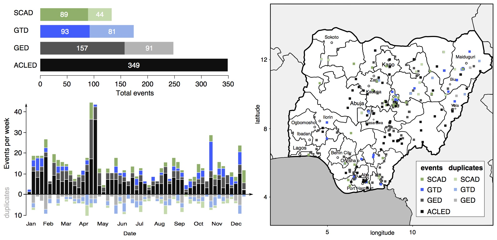
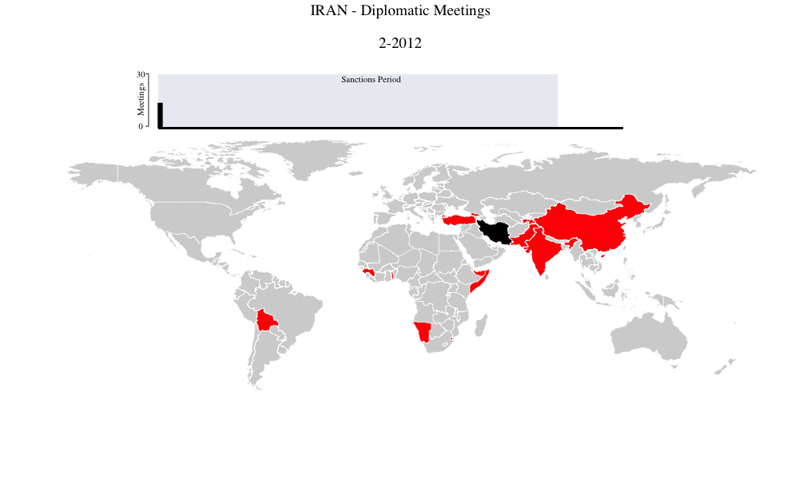
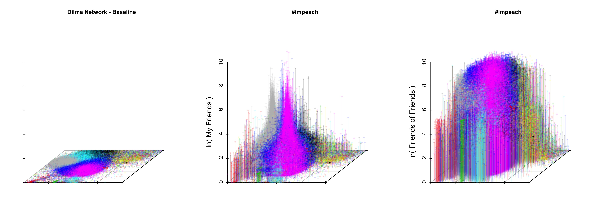

About
I am a doctorial candidate in the Department of Government and Politics at the University of Maryland, College Park. My dissertation looks at recruitment and adverse selection problems within non-state violent organizations. Specifically, I focus on two questions: first, why some rebel organizations develop institutions to screen potential recruits while others do not, and second, the effect selection (or the lack there of) has on group-level outcomes, such as violence against civilians, group cohesion, and organizational survival. I use a combination of original data, agent-based simulation, and a novel live simulated environment to explore this research topic.
I am also involved in a number of projects regarding event data integration, conflict diffusion processes, mapping diplomatic networks, and leveraging games data to examine cohesion patterns within competitive groups. See my research page for more information!
I love the outdoors, which I feel estranged from since moving east. I grew up in Idaho and Alaska, and I attended Beloit College in Wisconsin as an undergraduate. When I'm not hunched over a computer, I enjoy watching bad action movies, running, and eating. Fortunately, I genuinely love what I do, so only rarely does work feel like work.
Research
Below are some snapshots of some projects I am currently working on.
Integrating Conflict Event Data
with Karsten Donnay, Erin McGrath, David Cunningham, and David Backer

The growing volume of sophisticated event-level data collection, with improving geographic and temporal coverage, offers prospects for conducting novel analyses. In instances where multiple related datasets are available, researchers tend to rely on one at a time, ignoring the potential value of the multiple datasets in providing more comprehensive, precise, and valid measurement of empirical phenomena. If multiple datasets are used, integration is typically limited to manual efforts for select cases. My co-authors and I develop the conceptual and methodological foundations for automated, transparent and reproducible integration and disambiguation of multiple event datasets.
In a recent paper, we formally present the methodology, validate it with synthetic test data, and demonstrate its application using conflict event data for Africa, drawing on four leading sources (UCDP-GED, ACLED, SCAD, GTD). We show that whether analyses rely on one or multiple datasets can affect substantive findings with regard to key explanatory variables, thus highlighting the critical importance of systematic data integration.
To make the method accessible to all researchers, Karsten Donnay and I have developed an R package, which allows for easy implementation. We will be releasing the package on CRAN in 2017.
Mapping Diplomatic Networks
with Michael Joseph

After a century of research on international crisis, we still have trouble anticipating conflict between states. This partly due to the difficulty in measuring the intentions and foreign policy strategies of states. To fill this gap, a coauthor and I turn to an untapped source: the structural patterns of diplomatic meetings. These meetings are pre-organized, public engagements between the foreign policy elites of two states. We systematically scrape and machine code records of all self-reported diplomatic exchanges for 80 states cross-nationally to reconstruct a state’s ego-centric network of diplomacy over time. By leveraging structural breaks in the meeting patterns between states, we provide an efficient, scaleable method of examining state behavior in almost real time.
As a proof of concept, in a recent paper we perform this procedure on Iran and Russia, and show that structural breaks appear in Iran’s diplomatic behavior in the months after sanctions are lifted, and in Russia a year before the Ukraine crisis and again when Russia begins its military campaign in Syria.
Hashtags that Matter
with Ernesto Calvo and Neil Lund

In a recent research note, we describe a method to rank and map the propagation of hashtags in complex social networks. We take advantage of the known properties of the Generalized Friendship Paradox to measure the propagation rate of edge attributes (hashtags) in Twitter. We proceed to map the regions of the political networks that are activated by different hashtags. We exemplify our strategy analyzing a large protest network in Brazil during the second half of 2015, the #Dilma mobilizations.
Curriculum Vitae
To download a current .pdf version of my CV, click here.
Published Work
Papers
"A Voice in the Process: A Cross-National Look at Ethnic Inclusion and Economic Growth in the World." (with Johanna K. Birnir) 2014. Development. 57(2).
Book Contributions
"The Geography of Organized Armed Violence Around the World" (with Erik Melander and David Backer). Forthcoming in Peace and Conflict 2017. Ed. Paul Huth, Ravi Bhavnani, and David Backer, Routledge.
Under Review
"Integrating Conflict Event Data" (with Karsten Donnay, Erin McGrath, David Cunningham, and David Backer)
"Cultural Imprinting, Institutions, and the Organization of New Firms" (with David Waguespack and Johanna K. Birnir)
Working Papers
"Providing to Compete: Why Regime Change Movements Provide Social Welfare Provisions"
"A Break from the Past: why mapping deviations in diplomatic networks reveals shifts in foreign policy strategies" (with Michael Joseph)
"Grievance and Electoral Violence" (with Erin McGrath, Karsten Donnay, David Cunningham, David Backer)
"Hashtags that Matter: Measuring the propagation of Tweets in the #Dilma Crisis" (with Ernesto Calvo and Neil Lund)
Presentations
An Automated Aggregation of Geo-coded Violent and Non-violent Conflict Events , Peace Science Society, Annual Meeting (Fall 2016)
Integrating African Conflict Event Data , American Political Science Association, Annual Meeting (Fall 2016)
MELTT: Matching Event Data by Location, Time, and Type , The Society for Political Methodology (Summer 2016) and Midwest Political Science Association, Annual Meeting (Spring 2016)
Providing to Compete: An Examination of Social Welfare Provisions by Regime Change Movements , Midwest Political Science Association, Annual Meeting (Spring 2016)
Software
MELTT: Merging Event Data by Location, Time, and Type (with Karsten Donnay)
We formalize a framework for merging and disambiguating event data based on spatiotemporal co-occurrence and secondary event characteristics in a forthcoming R package. The package accounts for intrinsic "fuzziness" in the coding of events, varying event taxonomies, and different geo-precision codes. The procedure and methodology seeks to assist researchers in bringing together disparate geospatial, temporally disaggregated event data.
diploMap
Python module that leverages diplomatic meeting data between elites and utilizes an original dictionary-guided machine coding procedure to reconstruct global diplomatic networks.